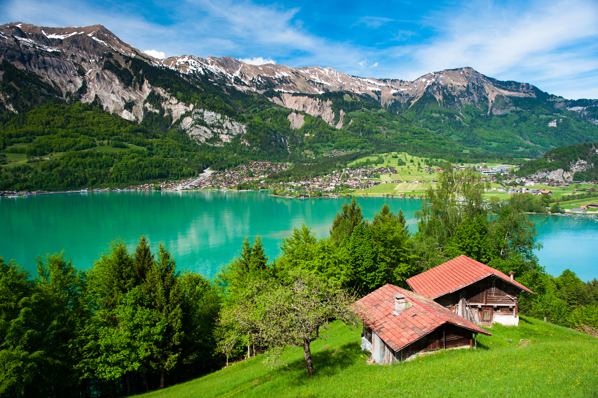

 Suiza (en alemán, Schweiz; en francés, Suisse; en italiano, Svizzera; en romanche, Svizra), oficialmente la Confederación Suiza (en alemán, Schweizerische Eidgenossenschaft; en italiano, Confederazione Svizzera; en francés, Confédération suisse; y en romanche, Confederaziun svizra), es un país sin salida al mar ubicado en Europa central y que cuenta con una población de 8 500 000 habitantes (2018).10 Suiza es un Estado federal con 26 estados, llamados cantones y cuenta con cuatro idiomas oficiales: alemán, francés, italiano y romanche. Berna es llamada ciudad federal (no capital) y es la sede de las autoridades federales, mientras que el sector privado del país está más desarrollado en las ciudades de Zúrich, Basilea y Ginebra.11 Suiza es el cuarto país más rico del mundo, según su PIB per cápita, con 83 718 dólares estadounidenses (2011).7 Limita al norte con Alemania, al oeste con Francia, al sur con Italia y al este con Austria y Liechtenstein. Se caracteriza diplomáticamente por su política de relaciones exteriores neutral, sin haber participado activamente en ningún conflicto internacional desde 1815. Suiza es sede de cuantiosas organizaciones internacionales, como la Cruz Roja, la Organización Mundial del Comercio, la Unión Postal Universal, la Unión Internacional de Telecomunicaciones, la Organización Mundial del Movimiento Scout, así como una de las dos oficinas de la ONU en Europa y de agencias especializadas de esta institución tales como la Organización Internacional del Trabajo o la Organización Mundial de la Salud. A su vez, es sede de la FIFA, máximo organismo del fútbol a escala mundial, y de la UEFA, mayor ente del fútbol europeo; también es sede del COI, máximo organismo encargado de la realización de los Juegos Olímpicos y de la FIDE, máximo organismo del ajedrez en el ámbito mundial; en sincronia con los anteriores entes, alberga al Tribunal de Arbitraje Deportivo. La fecha de su creación como Estado se fijó el 1 de agosto de 1291 de acuerdo con la tradición. Debido a este motivo, cada año se celebra la fiesta nacional el 1 de agosto.
Grecia (en griego moderno, Ελλάδα, Elláda, AFI: [eˈlaða] ( escuchar); en griego antiguo, Ἑλλάς, Hellás), oficialmente República Helénica (en griego, Ελληνική Δημοκρατία, Ellinikí Dimokratía, AFI: [eliniˈci ðimokɾaˈtia]), es uno de los veintisiete estados soberanos que forman la Unión Europea.4 En este país viven alrededor de once millones de habitantes que conforman una sociedad muy homogénea, donde principalmente se habla griego y se practica el cristianismo ortodoxo.8 Atenas, la capital, es la ciudad más poblada del país y la segunda es Tesalónica. Otras ciudades como El Pireo, Patras, Heraclión y Lárisa, son centros políticos, económicos y culturales a nivel regional.9 Grecia está estratégicamente ubicada entre Europa, Asia y África, y comparte fronteras terrestres al noroeste con Albania, al norte con Macedonia del Norte y Bulgaria, y al noreste con Turquía.101112 Al este se encuentra el mar Egeo, al oeste el mar Jónico y en el sur, el Mediterráneo; estos tres mares bañan sus 13 676 km de costas, el 11.º litoral más largo del mundo.4 El territorio griego está conformado por siete archipiélagos con unas 1400 islas, de las que 227 están habitadas.13 Cerca de un 80 % de su relieve consta de montañas, de las cuales la más alta es el monte Olimpo, con 2917 metros sobre el nivel del mar.4 La Grecia moderna tiene su origen en la civilización de la antigua Grecia, cuna de la civilización occidental. Para Occidente es el lugar de nacimiento de la democracia, la filosofía occidental, los Juegos Olímpicos, la literatura y el estudio de la historia, la política y los más importantes principios de las matemáticas y la ciencia.14151617 El Estado griego moderno, que comprende la mayor parte del núcleo histórico de la civilización griega, se estableció en 1830, luego de una guerra de independencia del Imperio otomano.18 El legado de su larga historia se refleja en el arte, la arquitectura, gastronomía, literatura y otros aspectos culturales.19